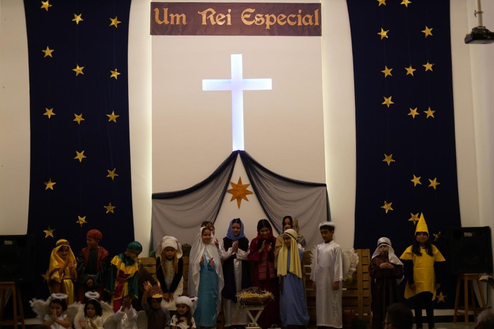

Em 10/05/1993 foi organizada como congregação da Igreja Presbiteriana de Vitória da Conquista. Após funcionar em alguns endereços provisórios, fixou-se no Caminho 19b, número 07, em frente à praça central da U6, que era basicamente um grande campo de areia e pó. numa estrutura simples, de piso vermelho e portas de ferro, onde antes funcionava um bar e contava apenas com um pequeno salão, três salinhas e um pequeno sanitário.
O então Presbítero Evan Gouveia de Deus assumiu como evangelista em 2007, substituindo o Presbítero e evangelista Ronaldo Paixão Meira dos Santos. A congregação da IPVC na URBIS VI, contava na época com cerca de 30 membros, mas mantinha um trabalho pujante de evangelização e ensino.

A IP URBIS VI foi organizada em 31 de outubro de 2020. Em 06 de janeiro de 2021, a pedido da IPU6, é sancionada a Lei de nº 2.443 que muda o nome do Caminho 19b para Caminho Castelo Forte. Hoje a igreja conta com 160 membros e mantém uma congregação com 40 pessoas na cidade de Ibicaraí. Além de se dedicar fortemente no ensino, inclusive trabalhando no projeto de criação de instituto de educação teológica, a igreja também atua na área da Ação Social através do Projeto Mackenzie Solidário.